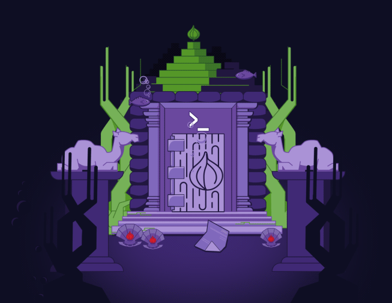

Subscribe to the podcast to receive new episodes as soon as we release them

Languages come and go. A few have the right stuff to rise to the top—and fewer stay there. Perl had a spectacular rise, a quiet slump, and has now found its place in the world of programming.
Perl seemed destined to rule the web. Michael Stevenson and Mike Bursell describe how Perl’s design made it ideal for the early web. We hear from Conor Myhrvold about its motto: “There is more than one way to do it.” Elizabeth Mattijsen shares how—despite Perl’s strengths—a long development cycle slowed Perl’s growth. And although it’s not the top web language anymore, John Siracusa points out that Perl lives on as a niche tool.
00:02 - Saron Yitbarek
Picture Larry Wall, the creator of the Perl language, stepping up to the mic at a conference in 1999. He's got his signature bushy mustache and swept-over bangs, and he's feeling good. His language has been gathering steam.
00:19 - Voice actor
Testing.
00:19 - Saron Yitbarek
It's easily surpassed COBOL, surpassed Visual Basic, and Python? Python's still a distant contender, fodder for a couple of Wall's jokes. Wall shows the crowd numbers from a dice.com report. Perl's future is very, very bright. And then, it wasn't. Fast forward two decades to the summer of 2018, and dice.com names Perl one of the languages most likely to go extinct. What just happened?
00:59 - Saron Yitbarek
I'm Saron Yitbarek, and this is Command Line Heroes, an original podcast from Red Hat. This season is all about the power and promise of our programming languages. Last episode, we tracked JavaScript on its crazy rise to success as it hitched its fortunes to the web.
01:19 - Saron Yitbarek
But not every language has a story of non-stop growth and success. Most languages emerge, play their part in a very particular ecosystem of the moment, and then start to recede when our programming lives call for other kinds of tools.
01:37 - Saron Yitbarek
This episode we're taking a deep dive into the world of Perl. What caused its early success, and why did that success suddenly get turned upside down? The environment we live in, our infrastructure, our hardware, all kinds of factors will dictate which languages thrive, and which begin to shrink. And that's what's so fascinating about the story of Perl.
02:08 - Saron Yitbarek
We know that Perl didn't take over the world, but back in the 90s nothing was that clear. Tim Berners-Lee released the World Wide Web in 1991, and it quickly created a whole new frontier of web-based development. It was anybody's guess which programming language was going to succeed in that new terrain.
02:31 - Michael Stevenson
The web emerged at a time that there's a lot of waiting for something to happen. There was excitement.
02:39 - Saron Yitbarek
Michael Stevenson is an Associate Professor in Media Studies at the University of Amsterdam. He described that earlier web for us. People had seen Usenet, and they'd seen the ARPANET. They'd seen America Online, and a few others. But the internet's full development potential really hadn't been expressed until the web came along. Suddenly, you're pointing and clicking your way into this vast, connected world. It was a revelation.
03:09 - Michael Stevenson
You have to remember that 1993, kind of when the web peeked its head up, that was the same year that Wired Magazine started publishing. Before that you had things like Mondo 2000, these magazines that really made computers look like a source of mystical knowledge that made computers seem cool.
03:32 - Michael Stevenson
And so, the web, in that sense, also arrived at a pretty specific time where people were ready to be excited about technology in that way.
03:43 - Saron Yitbarek
Now, here's the thing. Larry Wall created Perl in 1987. That's four years before all this excitement about the World Wide Web. The Perl that Larry Wall first gave the world was just this general-purpose Unix scripting language. Totally helpful for sure, but Perl also had these secret elements that were going to make it an ideal language for a world of web development that was just around the corner.
04:14 - Michael Stevenson
... quite famously was invented in a kind of secret NSA project that Larry Wall was working on. Essentially what he was doing was creating a hacked version of news that Usenet ... the software that Usenet ran on. And so, the language from the beginning was about text manipulation, and moving data from one spot to another. This just completely fit in with what was going to be needed for the web, and Perl, as a scripting language that was easy to use, that more closely resembled natural language. It could be used to develop things quite quickly. All these things made it a perfect fit, not just for the professional users, but also this new group of amateurs that came in.
05:09 - Saron Yitbarek
Almost by accident Perl was ready to capitalize on the web when it came along. Larry Wall couldn't have known that the web was about to show up. But when it did, things dovetailed. But here's something else that I think is key. Perl was a free language. Larry Wall released it under the GPL, the General Public License, that had been developed by the Free Software Foundation.
05:37 - Saron Yitbarek
Wall's decision to make his language free was totally in line with a new web-based way of thinking that was just starting to emerge, and Perl was forward-thinking in other ways, too.
05:50 - Michael Stevenson
Perl was incredibly open in a sense that it was always willing to integrate something else, something new. This really goes with who Larry Wall is. He's a very open person who will ... he was very humble, and will always carefully consider what others think, and try to put himself in their shoes. It's interesting how, for me, Perl's character as a language, and as a community, really fit that for a long time.
06:27 - Saron Yitbarek
Again, Perl was ideally suited to that early, wild west phase of the web, that hacker moment. In fact, one of Perl's mottos is, "There's more than one way to do it."
06:39 - Michael Stevenson
There's a kind of almost romantic connection between the heyday of Perl and the heyday of this experimental open web, before it became so dominated by just a couple of platforms.
06:56 - Saron Yitbarek
Remember that the 90s was a moment in the web's history when people were still rushing to figure out what was possible. There was this huge new need for programming. Everybody had to have a web page, and that meant a whole new army of developers, all of them open to new ways of doing things. The question became, "Okay, we've got a brand-new territory to play in, but what language is going to get the job done?"
07:26 - Saron Yitbarek
Perl didn't turn out to be the final answer to that question. But, for lots of people, Perl was the first answer.
07:34 - Michael Stevenson
I'm not saying that I would rather have super slowly loading web pages, and no Google search engine, but there is something of course really nice about that time when a couple of guys would, from their dorm room, create something like slashdot. There's something special about that time that I do think that as the web has become so mainstream and professionalized, and so concentrated around a few big companies, that we do miss. And for me, Perl symbolizes that more than any other story from that early period.
08:15 - Saron Yitbarek
Michael Stevenson is an Associate Professor in Media Studies at the University of Amsterdam.
08:24 - Saron Yitbarek
So, as the 90s rolled around, Perl emerged as the language that fit in with the early web's possibilities. It was a language of its time. Larry Wall, and Perl by extension, got what the web was all about.
08:40 - Mike Bursell
You could do searches. You could create pages on the fly, and this is the brave new world of the internet, of the web, that you could do this stuff in real time.
08:52 - Saron Yitbarek
That's Mike Bursell, Chief Security Architect over at Red Hat. Mike was one of those hackers who discovered Perl in the mid-90s.
09:00 - Mike Bursell
For the web, Perl was the starting point for many people. Java™> was early days, it wasn't really fantastic at text input/output, and if you wanted to be taking queries and generating pages, well Perl was what people were using anyway.
09:22 - Mike Bursell
Perl was just a good fit, because it's good at taking text, and doing other things with text. And that's what the web was.
09:31 - Saron Yitbarek
Larry Wall has a background in linguistics, by the way, which explains Perl's strong text parsing. And that was a huge bonus, as Mike Bursell mentioned, because the web was largely a text-based medium in those early days.
09:47 - Saron Yitbarek
People didn't really have the bandwidth for graphics.
09:51 - Mike Bursell
It was easy to use. It was easy to copy. People were very open with sharing, and it produced output quickly, and that was all good stuff.
10:02 - Mike Bursell
Oh, and the other thing, of course, is you could pipe things from it. So, it was very much what people are used to, and very easy to test even offline, and that was all very useful.
10:13 - Saron Yitbarek
Useful especially for all those sysadmins, who were reimagining their lives in a web-based world.
10:21 - Mike Bursell
Perl was a real gift for sysadmins. Even in those days, you're getting lots of logs if you are doing anything interesting. Managing those logs, breaking them down, searching them, and being able to present them in different ways, or taking any other large corpus of text, which basically is what logs are, or even debug. Unless you were going to pipe orc, and sed and stuff, and ed on the command line, which gets very painful very quickly, Perl was your go-to for that.
10:55 - Saron Yitbarek
By the late 90s, Perl 5 had pulled together a powerful community of users. Older languages, like Fortran and C, had relied on big, expensive hardware. But Perl was scrappier and more portable. It was designed to thrive in a world where hardware costs were dropping dramatically, letting all those new programmers work fast and easy. That's because Larry Wall made his language more human-like at the expense of CPU and memory requirements. All those elements combined to make Perl a language that welcomed the new development community.
11:36 - Mike Bursell
There was very much a growing community of people out there who you could go and talk to about what there was. PerlMonks started to arrive, it was a great place to discuss things, find out what was going on.
11:50 - Saron Yitbarek
That community really did have the best the web could offer. They discovered a huge repository of software modules, a bank called CPAN, which those sysadmins loved. It gave Perl even more flexibility, lots of people could deploy code written by a few superstars.
12:15 - Mike Bursell
It had libraries to do pretty much anything you wanted, and if you couldn't find it, you asked, and someone wrote it.
12:21 - Saron Yitbarek
Mike Bursell is the Chief Security Architect at Red Hat.
12:28 - Saron Yitbarek
So, Perl was free, it was supported by a growing library of modules, it was portable, and it had a booming community. Things were looking good. Perl could exploit all the best in that new 1990s world of web development. But, just as the 90s came to a close, as if on queue, the development landscape changed again. Changed big time.
12:57 - Alan Greenspan
But how do we know when irrational exuberance has unduly escalated asset values, which then become subject to unexpected and prolonged contractions?
13:12 - Saron Yitbarek
Irrational exuberance. That's Alan Greenspan, then Chair of the Federal Reserve, talking to the American Enterprise Institute in 1996. And that phrase of his, irrational exuberance, was a warning about the dot-com bubble everybody rode through the 90s. All those early web developers using Perl were riding high on that bubble, but it all burst in 2000, just like Greenspan predicted.
14:11 - Conor Myhrvold
Hi, I'm Conor Myhrvold. I've been programming for the last five or six years, and I'm currently in the technology space working for Uber.
14:20 - Saron Yitbarek
When Conor was in high school in the early 2000s, Perl was still a pretty big deal. But he was increasingly aware of a competing language, called Python.
14:31 - Conor Myhrvold
One thing that Python had going for it, is it's a much more structured language in that there's one obvious way to do a lot of different things, and it's set up that way. Whereas Perl kind of relished in being the fact that there's more than one way to do something. But that was confusing to a lot of beginners.
14:49 - Saron Yitbarek
Perl had that motto, "There is more than one way to do it." Python was actually invested in the opposite. Python gave you one obvious solution for each problem, and that meant looking at somebody else's Python code was easy to do. Looking at somebody else's Perl code, on the other hand, could be confusing. Perl made sense as a person's third, or fourth, language. Precisely because it was a scripting language. It was the duct tape of the internet.
15:23 - Saron Yitbarek
But Python was a language you could really dig into, even as a newcomer. Perl had a specific set of strengths; searching for text, bioinformatics. But Python was this easy, general-purpose language. Python gained more and more cred as the language people wanted to learn first. That was a huge deal.
15:47 - Conor Myhrvold
A lot more people were going online, and a lot more people are learning how to program. One thing that Python benefited from, especially relative to Perl during this time period, is that it was relatively easy to learn because it was more structured. And as a consequence of that, in a world where the pie is increasing quickly, if you can get more of that increase in pie, that will eventually mean that there are tutorials and more stuff available to you.
16:10 - Saron Yitbarek
I mentioned CPAN before, that awesome central repository that Perl users could pull from. It was a major draw in the 90s. But the value of CPAN was also changing.
16:24 - Conor Myhrvold
That also doesn't really help you learn a language, because you're “copypastaing” and just replacing what you need to in the minimum amount of fashion. That became a disadvantage over the long run, because if you have people that learn how to use a programming language by doing original development of everything themselves, even if it takes a lot longer, they feel like they're more invested in it, and they understand what's going on.
16:48 - Saron Yitbarek
Python didn't have a centralized repository, like CPAN, but the kind of developers coming to the table in the new millennium, in a world where search on the web was so much more powerful, that repository didn't have as much value anyway.
17:05 - Saron Yitbarek
Python eventually had loads of tutorials, and of course, today you also have platforms, like GitHub.
17:13 - Conor Myhrvold
What ended up happening is a lot of advantages that Perl had were these network effects from an era that was outgrown.
17:24 - Saron Yitbarek
Conor Myhrvold is an engineer at Uber.
17:30 - Saron Yitbarek
Languages rarely rise and fall by external forces alone though, and the internal issue over at Perl was that as it was evolving, it seemed to hit a roadblock. Python was releasing new iterations in a pretty orderly fashion, but over at Perl, well as we learned in episode 1 of this season, in 2000 that dot-com bubble was bursting, and Python started gobbling up new developers.
17:59 - Saron Yitbarek
Everyone was expecting the release of Perl 6, and people were excited. They waited, and waited, and waited. They waited for 14 years.
18:15 - Elizabeth Mattijsen
People came up with about 300 plus things that Perl 6 should be able to do, and of course a lot of these things were basically, mutually exclusive.
18:26 - Saron Yitbarek
That's Elizabeth Mattijsen, who works as a core developer on Perl 6. Elizabeth was at the Perl conference in Monterey in 2000. That's when developers decided they were stagnating, and Perl 6 was necessary. Larry Wall agreed, but if Perl 5 was his rewrite of Perl, he wanted Perl 6 to be the community's rewrite of Perl. And group work can take longer, even 14 years. It was a long and difficult road for those developers.
19:01 - Elizabeth Mattijsen
We could argue that the current implementation of Perl 6 is actually the third attempt of implementing it.
19:07 - Saron Yitbarek
The way Elizabeth tells it, there were attempts throughout those 14 years. Attempts that had long, agonizing depths. People burnt out; people ran into dead ends. By the time Perl 6 finally arrived on Christmas Day, 2015, much of the world had already moved on. And it's important to note that Perl 6 wasn't ramping up into some revolutionary new thing that would strike back at Python. Perl 6 was more a thoughtful reworking of the original.
19:43 - Elizabeth Mattijsen
I think Larry Wall actually used a very nice metaphor in one of his State of the Onion speeches. Perl 5 to him is like The Hobbit, and Perl 6 is like Lord of the Rings. If you really look at the stories of The Hobbit and Lord of the Rings, they basically are more or less the same story. It's just that The Hobbit is much smaller and has more plot holes than Lord of the Rings and isn't as extensive. I think that describes very well what the difference is between Perl 5 and Perl 6. It is basically ... it's the same idea, it's the same mindset, it's the same environment, but a re-imagination of it.
20:26 - Saron Yitbarek
Elizabeth Mattijsen is a core contributor to Perl 6.
20:32 - Saron Yitbarek
Today, Perl might not even place on a list of the top 20 languages. Between external competition, and internal delays, it just hasn't proven itself for most new developers. But that raises a big question, is popularity really how we should judge our programming languages? Or, should we be looking at other values? What does it really mean when the megastar becomes a sidekick?
21:06 - Saron Yitbarek
Around the turn of the century, as the dot-com bubble was bursting, and Perl's dominance began to wane, Larry Wall made an interesting statement. He argued that, while Perl would never again be among the world's most popular programming languages, it could be a leader within a smaller category. And that, said Larry Wall, was the real goal. To be best in category, not best in the world. An SUV, he said, would never compete with a race car.
21:38 - Saron Yitbarek
I wanted to dig into that idea. I wanted to understand what best in category really means for a programming language.
21:48 - John Siracusa
I am John Siracusa I am a programmer, and I'm a podcaster.
21:53 - Saron Yitbarek
John actually co-hosts three podcasts, Accidental Tech Podcast, Reconcilable Differences, and Robot or Not? We got chatting about Perl's position in the world today.
22:06 - Saron Yitbarek
What about today? Does it still hold up as being best in class?
22:10 - John Siracusa
Perl 6 has things that no other language has, that other languages should have, and I keep waiting for other languages to steal from it. Grammars, for example, is a great way to conceptualize a common task, and using grammars to solve parsing problems is, in my opinion, more pleasant, cleaner, and nicer than using the existing tools that we have.
22:31 - John Siracusa
There's lots of parts of the object system in Perl that might seem frivolous, but that I fully expect other languages to eventually adopt just as many of those languages eventually adopted a lot of the ideas that were in Perl 5. So, I think Perl 6 is best in class in many categories. It's just such a shame that so few people will find themselves with an opportunity to use it.
22:52 - Saron Yitbarek
What do you think needs to happen for the Perl 6 community to grow? What needs to happen for people to be more involved in Perl 6?
23:00 - John Siracusa
It's kind of been the story of Perl 6, like it's always been looking for a really fantastic implementation. That was part of the second-system problem ... second-system syndrome, I think they call it-
23:11 - Saron Yitbarek
Mm-hmm.
23:12 - John Siracusa
... of Perl 6, where you want to fix all the problems of the world. One of the problems they wanted to fix was the runtime. What is it that runs our code? The stuff that runs Perl 5, and Perl 4 before it, is a gigantic C program, written by people with very idiosyncratic coding styles and a ton of macros. It's kind of inscrutable.
23:33 - John Siracusa
The idea with Perl 6 is let's not do that again, let's not make a giant wad of C code. Instead, let's come up with a virtual machine, which was the fad at the time, and there were so many grand ideas about how it was going to work. In the end, we got several medium-to-okay implemented versions of virtual machines, sometimes competing with each other, none of them really delivering on the performance, and stability, and features that the language needed to support it.
24:01 - Saron Yitbarek
What is actually going on with Perl today? What's your take on it?
24:06 - John Siracusa
Perl 5 definitely seems like it's on the downward slope, because all the other languages that are contemporaries with Perl 5 took most of its best ideas and have gotten more support. That said, because it was the king for a long time, there's a lot of Perl 5 code out there running some big, important sites, and people need to maintain and expand that code.
24:29 - John Siracusa
It's going to take a long time for that to fade away. Just look at COBOL that's still out there, and how people are still hiring people to work on COBOL, right?
24:35 - Saron Yitbarek
Mm-hmm. That's true.
24:36 - John Siracusa
You're asking about if it's a dying language, and I mention COBOL, that doesn't sound good. Because will Perl 6 itself ever become a dominant language? It's not looking good. There's so much investment surrounding the other languages, and if Perl 6 hasn't gotten that investment now, I'm not sure what's going to change to make it catch on.
24:54 - Saron Yitbarek
If you had it your way, what are your hopes for Perl? What would you like to see in Perl 5, or Perl 6, and what would you like to see happen in the future?
25:04 - John Siracusa
My hope for Perl 5 is that people don't dismiss it, because despite all the other more popular languages, there are still problems today to which Perl 5 is the best solution. Very often those are sort of glue type problems. If you find yourself ever writing a shell script, and you're like, "Well, I'm not going to use my 'real programming language' for this." Whether it's Python, or Ruby, or whatever. But a shell script can let me connect together a bunch of stuff. Perl is a better tool for that job. It is easier to write a correct Perl script than it is to write a correct shell script.
25:40 - Saron Yitbarek
I think what it all comes down to is that Perl might not be the entry point anymore, but for a more seasoned, polyglot developer, you never want to throw out that niche tool in your toolbox. The specified tools are sometimes what allow you to level up.
25:58 - John Siracusa
Sometimes I'm sad, and depressed about Perl 6 and think it's going nowhere, and sometimes I'm like, "You know what? This is a nice little community." And every community doesn't need to take over the world and be the language that dominates the entire industry. And maybe you can just go along like this, essentially, indefinitely. That's the great thing about open source, and programming languages. No one's going to make you stop. You can just keep working on Perl 6 the same way you have been.
26:27 - Saron Yitbarek
John Siracusa is a programmer, and the co-host of three tech podcasts.
26:34 - Saron Yitbarek
Languages have life cycles. When new languages emerge exquisitely adapted to new realities, an option like Perl might occupy a smaller, more niche area. But that's not a bad thing. Our languages should expand and shrink their communities as our needs change. Perl was a crucial player in the early history of web development, and it stays with us in all kinds of ways that become obvious with a little history and a look at the big picture.
27:11 - Saron Yitbarek
Next time on Command Line Heroes, what turns a language into a standard, and how might a new standard emerge in a world of cloud-based development?
27:26 - Saron Yitbarek
Command Line Heroes is an original podcast from Red Hat. If you want to dive deeper into the story of Perl, or any of the programming languages we're exploring in season 3, head on over to redhat.com/commandlineheroes. Our web page is packed with bonus material for you to explore.
27:49 - Saron Yitbarek
I'm Saron Yitbarek. Until next time, keep on coding.
Keep going
Is Perl going extinct?
Opensource.com explores the meteoric rise of Perl, its fall out of the spotlight, and what's next in a programming language's lifecycle.
Modular Perl in Red Hat Enterprise Linux 8
Run your Perl applications in Red Hat Enterprise Linux 8.
Enjoy this episode's artwork on your device
Download the Command Line Heroes artwork and set it as your background.
{kind=link}
{kind=link}
{kind=link}
Featured in this episode
Also in this episode

Get the newsletter
After each episode drops, we'll send you commentary from the Command Line Heroes team, as well as links that help you take a closer look at the topics we cover. It's as simple as that.
Presented by Red Hat
For 25 years, Red Hat has been bringing open source technologies to the enterprise. From the operating system to containers, we believe in building better technology together–and celebrating the unsung heroes who are remaking our world from the command line up.